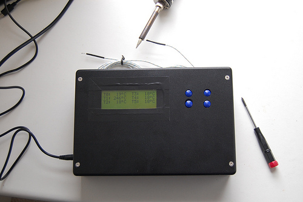

Small-scale Biofuel Production¶
| date: | May 4, 2011 |
|---|
MEng students at Sussex do group projects of their choice. Our group chose to work on a Small-scale Biofuel Production unit, that converts organic household waste to bio-ethanol. The group was formed of four students - two electronic and two mechanical engineers.
Introduction¶
The Small-scale biofuel production project has been running since 2008, and our group was the third one to work on this project. The running-goal is to design a unit that can convert biodegradable municipal waste to ethanol efficiently and with minimum human intervention.
While the previous groups focused on producing ethanol at the end of the year, our group decided that this time most of the work should be done on designing and building a biofuel production unit, that could be further improved by the future groups. This decision was mainly influenced by the number of flaws in the previous design.
This document will focus on electronics/control system design and only touch on electrical and mechanical parts of the projetc. Full details are provided in the dissertation, which can be downloaded in PDF format. The links are provided at the bottom of this page.
Control board¶
The control board was designed to replace the mess of veroboards, wires and blue-tack that was left to us by the previous group. The board contains most of the circuitry that is required to control a biofuel production process.
- The main reatures of the control board are:
- Power supply circuitry with a maximum input voltage of 34 volts
- PIC18F66K22 microcontroller with a 16MHz crystal
- Five thermocouple channels for temperature measurement
- Seven open-drain outputs for driving optocouplers (electrical interface)
- HD44780-compatible LCD and four-button keypad interfaces
- Real time clock with an external 32.768kHz crystal
- microSD card slot wired for SPI communication
The schematic and PCB design was done using Altium Designer. The design files can be downloaded from the links at the bottom of this page.
Layout of the control board.
Keyboard PCB¶
The user interface of the control system consists of two parts: an LCD and a keyboard. The LCD is a standard 4x20 character display with HD44780-compatible controller. The keyboard is just four tactile switches mounted on a PCB.
The design of the keyboard PCB is very simple so it was made at home using a DIY PCB Exposure Box and some chemicals.
Below is the picture of the PCB with the SMT components soldered on.

Enclosure of the control system¶
To make the product look more complete, an enclosure is required. The control system will contain the main control PCB, an LCD and a keyboard. These components will be hosted in a specially prepared box.
It was decided that a metal chassis will be used to mount the PCBs, while the chassis itself will be fixed to the box. The reasons for using a chassis are:
- Tidier, more compact arrangement inside the box. Were the chassis not used, the main PCB would have to be mounted to the back of the box, making the maintenance more awkward.
- Conductive chassis improves electrical and EMC performance of the system, as described in [1].
Based on the dimensions of the LCD and the keyboard, an off-the-shelf box was chosen. The metal cover from an old CD player was used as a source material for the chassis. A rectangular plate was cut out using a Dremel hand tool and cutting discs.
The picture below shows a finished chassis, after the edges have been filed, paint sanded-off, screw holes drilled and cable connector slots cut.
After the LCD and the keyboard were mounted on the chassis, appropriate holes could be cut in the box. Below, you can see how the front and the inside of the enclosure look like.
Firmware¶
Rewriting the firmware was also a significant part of the control system design. The previous group had their firmware developed in assembly, but due to lack of documentation and general readability of the code, it was decided that the firmware should be re-developed in C. As a result, a simple framework that enables developers to utilise most of the hardware, was developed. The code base contains functions for interfacing to the ADC and temperature measurement circuitry, LCD and keypad support, control of electrical devices and so on.
The code can be downloaded from the links at the bottom of this page.
Electrical system¶
My colleague was responsible for the electrical part of the project. The control unit interfaces to the electrical system in order to control various electrical and electromechanical parts. The two systems are galvanically isolated using optocouplers.
The major part of the electrical side is made of switching devices: relays and TRIACs. Relays are used to control motors and solenoid valves, while heaters are controlled by TRIACs. The electrical system also implements a zero-crossing detector which generates a pulse on every zero crossing of the mains voltage. This enables the control system to precisely adjust the power applied to the heaters using a phase-fired control method.
More details on the electrical design can be found in the project report.
Mechanical part¶
The mechanical construction is shown below. More details on the mechanical and structural design can be found in the dissertation. High resolution pictures are available in the photo gallery.

Links¶
- Dissertation: http://static/res/small_scale_biofuel_production.pdf [9.7MB]
- Documentation of the control board: http://static/res/ssbp_process_control_unit.pdf [7.9MB]
- Project files: https://github.com/armandas/Small-Scale-Biofuel-Production
- Photo gallery: http://www.flickr.com/photos/armandas/tags/smallscalebiofuelproduction/